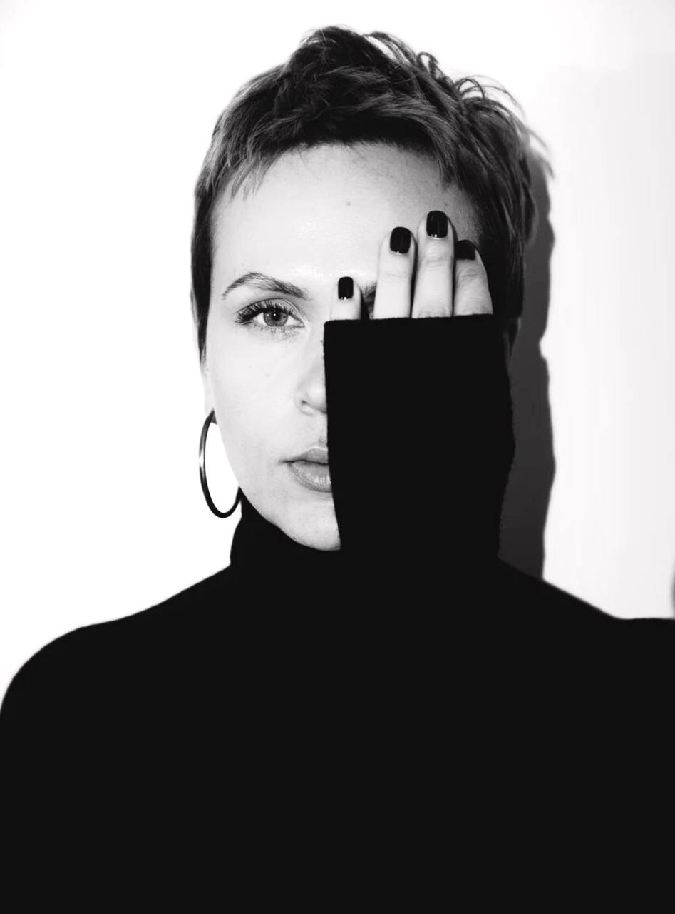

Обо мне
Международный стилист, fashion-журналист и аналитик индустрии моды.
Аккредитована на неделях моды в Париже, Милане и Копенгагене.
Автор публикаций в ведущих международных fashion- и деловых изданиях.
Изучаю моду в контексте культуры и общественных изменений, а стиль: как образ жизни, способ мышления и инструмент коммуникации.
Разрабатываю авторские цифровые продукты, объединяющие стилистику, психологию восприятия и современные технологии.
Основатель закрытого fashion-клуба «В моём стиле».
Платформы по изучению цвета «Система Цветовых сочетаний».
Приложения по имиджу «Система Имиджа».
Работаю с частными клиентами.
Спикер.
